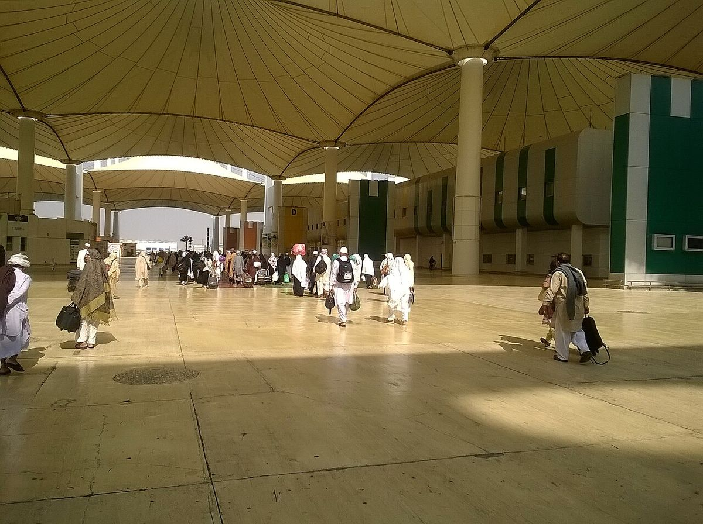

Kamu bisa mengecek estimasi keberangkatan haji reguler secara online dan gratis lewat portal resmi Kementerian Haji dan Umrah di haji.go.id/estimasi-keberangkatan. Siapkan nomor porsi 10 digit yang tercantum di bukti setoran awal atau Surat Pendaftaran Haji (SPH), masukkan ke kolom yang tersedia, selesaikan CAPTCHA, lalu tekan Cek Estimasi. Hasilnya tampil di layar, tanpa perlu login dan tanpa aplikasi tambahan.
Nomor porsi adalah nomor urut pendaftaran haji reguler yang terdiri dari 10 digit angka. Nomor ini diterbitkan setelah kamu membayar setoran awal Biaya Penyelenggaraan Ibadah Haji (BPIH) di bank penerima setoran, lalu tercatat di sistem Kementerian Haji dan Umrah. Nomor porsi tercantum di bukti setoran awal dan di Surat Pendaftaran Haji (SPH) berdasarkan Peraturan Menteri Haji dan Umrah Nomor 3 Tahun 2025. Per November 2026, kanal resmi untuk mengecek estimasi keberangkatan adalah portal haji.go.id dan aplikasi Satu Haji. Portal lama haji.kemenag.go.id sudah diarahkan ke haji.go.id karena pengelolaan haji pindah dari Kementerian Agama ke Kementerian Haji dan Umrah. Layanan ini gratis dan tidak meminta login. Hasilnya berupa perkiraan tahun keberangkatan, bukan jadwal pasti.
Apa itu nomor porsi haji dan di mana menemukannya?
Nomor porsi adalah bukti bahwa kamu sudah resmi masuk antrean haji reguler. Nomor ini terbit sesudah kamu mendaftar dan membayar setoran awal BPIH di bank penerima setoran. Setelah pembayaran tercatat, sistem menerbitkan nomor porsi dan mencantumkannya di bukti setoran awal serta di SPH. Simpan kedua dokumen itu baik-baik, karena nomor porsi dipakai setiap kali kamu mengecek antrean atau status pelunasan. Nomor porsi bersifat pribadi, jadi jangan dibagikan di grup chat. Pengecekan resmi hanya memakai nomor porsi dan tidak pernah meminta kata sandi, PIN rekening, atau kode OTP. Kalau ada pihak yang meminta data itu dengan alasan cek porsi, itu penipuan.
Foto: Adli Wahid, CC BY-SA 4.0, via Wikimedia Commons
Bagaimana cara cek estimasi keberangkatan haji lewat situs haji.go.id?
Portal resmi Kementerian Haji dan Umrah bisa dibuka dari HP maupun laptop, dan pengecekannya tidak butuh akun. Ikuti langkah berikut.
- Buka peramban di HP atau laptop, lalu ketik alamat haji.go.id/estimasi-keberangkatan.
- Pastikan tab yang dipilih adalah Estimasi Keberangkatan.
- Masukkan 10 digit nomor porsi persis seperti di bukti setoran awal atau SPH, karena satu angka salah saja membuat data tidak tampil.
- Selesaikan CAPTCHA yang muncul di layar.
- Tekan tombol Cek Estimasi, lalu tunggu hasilnya tampil.
Hasil yang muncul antara lain nama, kabupaten atau kota, provinsi, status pembayaran, dan perkiraan tahun keberangkatan. Portal ini juga menyediakan menu Daftar Tunggu untuk melihat antrean berdasarkan provinsi, dan menu Pelunasan untuk memeriksa status pembayaran.
Foto: Japanexperterna.se, CC BY-SA 2.0, via Wikimedia Commons
Bagaimana cara cek lewat aplikasi Satu Haji?
Aplikasi Satu Haji adalah aplikasi resmi yang diterbitkan Pusat Data dan Informasi Kementerian Haji dan Umrah. Aplikasi ini sebelumnya bernama Haji Pintar. Di Google Play Store namanya masih tercantum sebagai Haji Pintar, jadi jangan bingung. Pastikan pengembangnya tertulis Pusdatin Kementerian Haji dan Umrah RI sebelum mengunduh.
- Unduh aplikasi Satu Haji dari Google Play Store atau App Store.
- Buka aplikasi, lalu pilih menu Estimasi Keberangkatan.
- Masukkan 10 digit nomor porsi, lalu ketuk ikon kaca pembesar.
- Periksa data yang tampil, termasuk nama, kabupaten atau kota, provinsi, status pembayaran, dan estimasi tahun keberangkatan.
Aplikasi ini terhubung dengan Siskohat, sistem pemerintah yang menyimpan data pendaftaran dan pelunasan jemaah haji. Unduh aplikasi hanya dari toko aplikasi resmi. Jangan unduh aplikasi cek porsi dari tautan pesan berantai, karena rawan penipuan.
Kenapa banyak panduan lama soal cek porsi haji sudah tidak akurat?
Sejak 2025, pengelolaan haji pindah dari Kementerian Agama ke Kementerian Haji dan Umrah. Perpindahan ini ikut mengubah kanal pengecekan. Portal lama haji.kemenag.go.id kini diarahkan ke haji.go.id, aplikasi Haji Pintar berganti nama menjadi Satu Haji, dan sebagian panduan lama masih menulis alamat atau nama aplikasi yang sudah berubah. Ada juga panduan yang masih mengarahkan ke aplikasi Pusaka, padahal kanal resmi sekarang adalah haji.go.id dan Satu Haji. Calon jemaah yang mengikuti panduan lama bisa tersesat ke halaman yang sudah tidak dipakai. Karena itu, patokan paling aman adalah kanal yang tercantum di portal Kementerian Haji dan Umrah sendiri. Kalau sebuah panduan menulis alamat selain haji.go.id, cek dulu ke portal resminya sebelum mengikuti langkahnya.
Apa yang harus dilakukan kalau data tidak muncul?
Kalau hasil tidak tampil, jangan langsung panik. Periksa dulu nomor porsinya, angka demi angka, lalu bandingkan dengan bukti setoran awal atau SPH. Nomor porsi yang keliru satu digit saja tidak akan ditemukan sistem. Coba juga ulangi di jam berbeda. Kalau nomor sudah benar tapi data tetap tidak muncul, datangi kantor tempat kamu mendaftar dulu dengan membawa SPH atau bukti setoran awal. Petugas di sana bisa mencocokkan datamu langsung dengan sistem. Jangan percaya tawaran calo yang menjanjikan percepatan antrean dengan bayaran, karena antrean berjalan berdasarkan nomor porsi dan kuota.
Apa arti angka estimasi yang kamu lihat di layar?
Angka yang tampil adalah perkiraan tahun keberangkatan, bukan jadwal pasti. Estimasi dihitung dari posisi antreanmu, jumlah jemaah aktif, dan kuota yang berlaku saat pengecekan dilakukan. Angka itu bisa bergeser maju atau mundur kalau ada penyesuaian kuota atau perubahan kebijakan. Estimasi hanya berlaku untuk pendaftar berstatus aktif yang belum berangkat. Karena itu, cek ulang secara berkala, misalnya setiap beberapa bulan sekali, supaya kamu tahu kalau ada perubahan. Gunakan masa tunggu untuk menyiapkan dokumen, menjaga kesehatan, dan mempelajari manasik.

Foto: Shah134pk, CC BY-SA 4.0, via Wikimedia Commons
Mengecek nomor porsi haji dan estimasi keberangkatan bisa dilakukan sendiri dari HP, gratis, dan tanpa antre di kantor. Kuncinya hanya dua: simpan nomor porsi 10 digit baik-baik, dan selalu pakai kanal resmi haji.go.id atau aplikasi Satu Haji. Abaikan tawaran jalan pintas berbayar, karena antrean resmi tidak bisa dibeli.
Baca juga: kalau paspormu belum siap, baca Cara Membuat Paspor Online Lewat M-Paspor, dari Daftar sampai Ambil di rubrik Other. Panduan cek layanan resmi lain: Cara Cek BPJS Kesehatan Aktif atau Tidak Lewat HP 2026. Daftar lengkap artikel Other ada di halaman Other, dan artikel riset lain ada di blog.
Sumber dan Info Resmi
Fakta dan angka di artikel ini merujuk ke sumber berikut:
- BSI News: Cek Estimasi Keberangkatan Haji: portal resmi haji.go.id/estimasi-keberangkatan, layanan gratis tanpa login, nomor porsi 10 digit, nomor diterbitkan sesudah bayar setoran awal BPIH, SPH memuat nomor porsi berdasarkan Peraturan Menteri Haji dan Umrah Nomor 3 Tahun 2025, portal lama haji.kemenag.go.id diarahkan ke haji.go.id, aplikasi Satu Haji sebelumnya bernama Haji Pintar, menu Daftar Tunggu dan Pelunasan, langkah cek lewat portal dan aplikasi, hasil menampilkan nama, kabupaten atau kota, provinsi, status pembayaran, dan estimasi tahun keberangkatan.
- Madani News: Sudah Daftar Haji, Begini Cara Cek Estimasi Keberangkatannya: konfirmasi portal haji.go.id, gratis tanpa login, langkah aplikasi Satu Haji.
- By Ibnua: Aplikasi Satu Haji: aplikasi Satu Haji di Google Play Store masih tercantum bernama Haji Pintar, pengembang Pusdatin Kementerian Haji dan Umrah RI, diunduh lebih dari 1 juta kali, terakhir diperbarui 3 Mei 2026, terhubung dengan Siskohat.
- Hamidah: Cara Cek Porsi Keberangkatan Haji: pengelolaan haji pindah ke Kementerian Haji dan Umrah pada 2025, pengecekan lewat Pusaka sudah tidak lagi dipakai karena migrasi basis data ke Satu Haji, estimasi bisa berubah mengikuti kuota dan kebijakan, estimasi hanya berlaku untuk pendaftar berstatus aktif.
- Fahum UMSU: Cara Mudah Cek Nomor Porsi Keberangkatan Haji 2026: definisi nomor porsi 10 digit, tercantum di bukti setoran awal.
- Telset: Cara Cek Antrean Haji Online Lewat Situs Resmi dan Aplikasi: konfirmasi alamat haji.go.id/estimasi-keberangkatan dan langkah aplikasi Satu Haji.